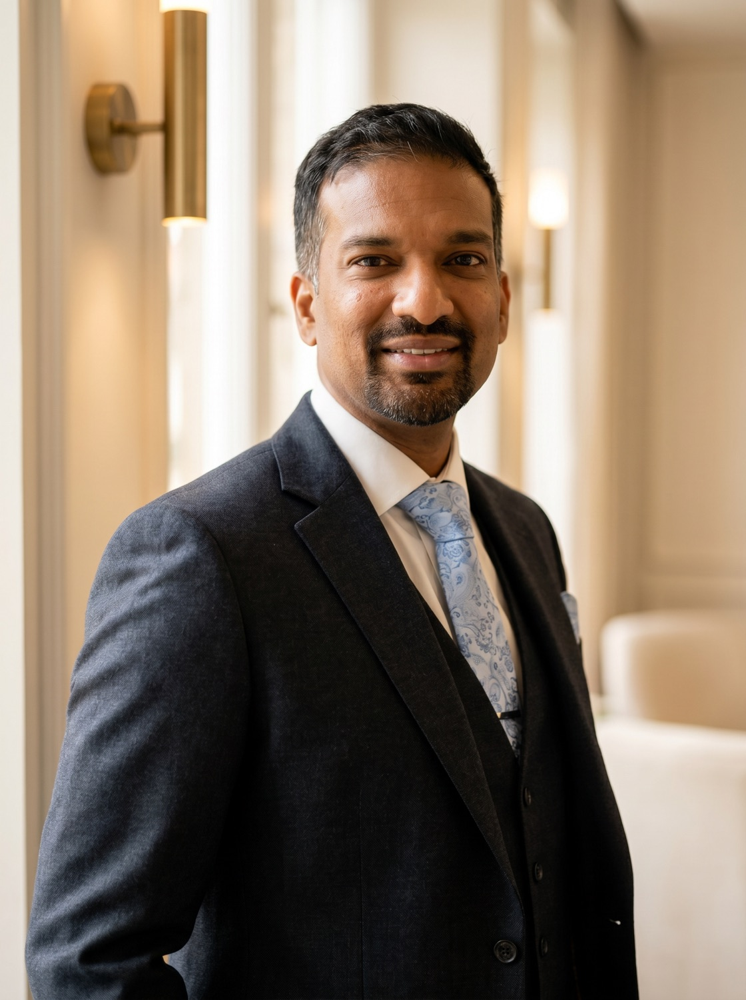
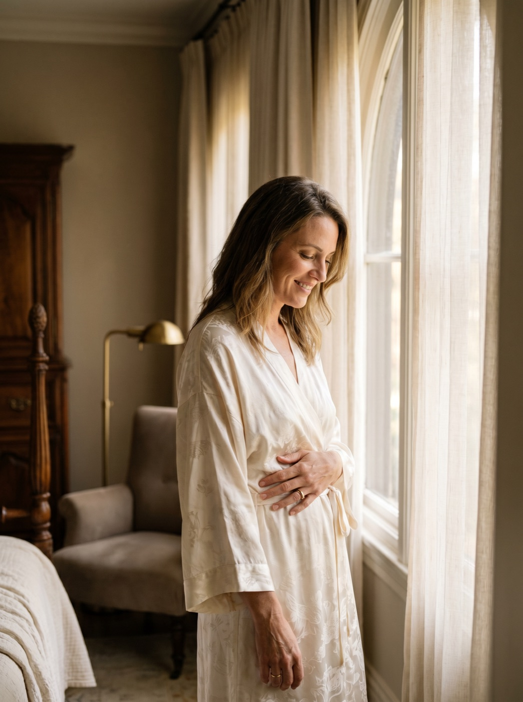
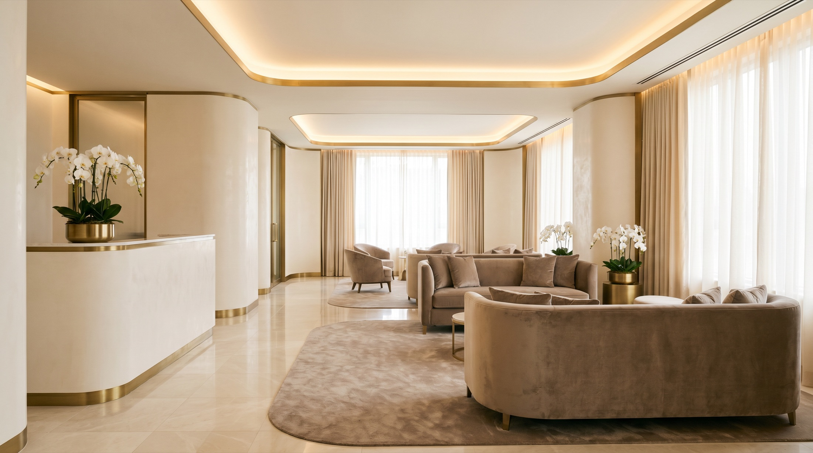

Where artistry
meets medicine.
A consultant plastic surgeon who treats every operation as a partnership, honest about what is involved, and devoted to a result that looks entirely, naturally you.

Mr Roshan Vijayan · FRCS(Plast)An artist's eye, a
doctor's honesty.
Qualified as a doctor in 2008, Mr Vijayan has spent eighteen years in medicine and is now in his fifth year as an NHS consultant plastic surgeon, trained extensively across London's teaching hospitals.
Alongside his private practice he holds a wide NHS practice, skin-cancer removal and reconstruction, body contouring, hand surgery and reconstructive work. He has published extensively, presented internationally, and continues to train and mentor surgeons.
- BSc (Hons), 2006
- MBBS, 2008
- FRCS (Plast)
- Executive MBA
- PgCert Clinical Education
GMC Reg. No. 7020524
“I believe in surgery as a partnership, a shared journey, with honesty about what is involved and a result that looks entirely, naturally you.”
For Mr Vijayan, plastic surgery sits where artistry meets medicine. A creative person at heart, he is drawn to studying a problem holistically, taking time, and crafting a result that is balanced and proportioned. He is, first and foremost, a doctor, frank about what is safe, advisable and truly in your best interests.

Restoring the body
after change.
Mr Vijayan's special interest is body restoration after pregnancy and significant weight loss, refining loose, redundant skin to reveal the physique beneath, and restoring the confidence to live fully again.
Every plan is studied and drawn up individually, followed by a thorough written summary so you can reflect, unhurried, before deciding anything.
Explore procedures →Care that is genuinely personal
Dual-surgeon operating
A senior surgical colleague assists on every case, shorter operating times and safer surgery, where most surgeons work solo.
Consultant-led aftercare
Mr Vijayan personally reviews you, answers emails within a day, and calls on day one after surgery, never handed to others.
Highly bespoke plans
Each plan is studied and drawn up individually, with a thorough written summary after your consultation.
A second consultation, included
Time to recap, ask anything that has surfaced, and confirm, built into the process as standard.
Early, flexible availability
Consultations often within a week or two, with flexible scheduling for surgery itself.

Have a conversation with Mr Vijayan
Enquiries are answered personally, usually within a day. There is no pressure, only an honest, expert opinion.
Request a Consultation